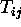
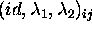

The agents are located in certain rows and seats in a hall. The row i and the seat j will be used for denoting the realized type and the sequence of actions of agents.The description of agents' types is given by a matrix  , where each element is a vector  .